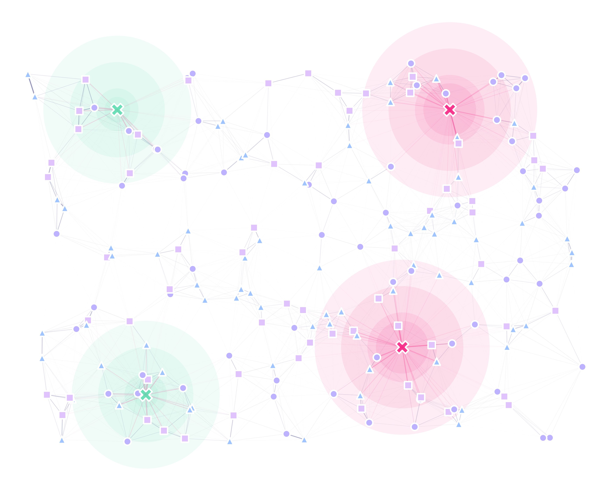

9. Stage-Specific Traps
MGSurvE can deal with situations in which individuals are more attracted to certain traps if they are moving from one point-type to another (analogous to making them more attracted towards traps that target their movement towards a particular resource). To do this, we setup a “trap mask” in which we define how the weight of the kernel is affected by a given point-type.
9.1. Setting Point-Process Up
To begin with this example, we will setup a rectangular landscape with 200 points in it which can be one of three point types:
xy = srv.ptsRandUniform(ptsNum, bbox).T
pType = np.random.choice(PTS_TYPE, xy.shape[1])
points = pd.DataFrame({'x': xy[0], 'y': xy[1], 't': pType})
And we define their movement mask as follows:
mKer = {'params': [.075, 1.0e-10, math.inf], 'zeroInflation': .75}
mMsk = np.array([
[0.2, 0.8, 0.0],
[0.0, 0.0, 1.0],
[0.9, 0.1, 0.0]
])
9.2. Setting Traps Up
For this demo, we will use two different traps, which we will lay down manually:
traps = pd.DataFrame({
'x': [-100, 50, -85, 75],
'y': [75, -50, -75, 75],
't': [1, 0, 1, 0],
'f': [0, 0, 0, 0]
})
tKer = {
0: {'kernel': srv.exponentialDecay, 'params': {'A': 0.50, 'b': .050}},
1: {'kernel': srv.exponentialDecay, 'params': {'A': 0.35, 'b': .050}}
}
If we plotted our landscape at this stage, it would look something like this:
Where both trap types attract individuals from every point-type equally.
9.3. Traps Mask
To modify the attractiveness levels for each point-type, we add our traps mask:
tMsk = np.asarray([
[1.0, 0.5, 0.0],
[0.0, 1.0, 0.0]
])
Where each row represents a trap type (two in this case), and each column a point type (three for this example). The way to interpret each cell would be: how much does the probability of getting trapped by the row’s trap type gets affected if the individual is coming out of the point type defined by the column. So, for example, if a mosquito is coming out the point-type 1, and there’s a trap of type 0, the probability of getting caught by the trap’s kernel is divided by half.
9.4. Full Landscape
With this setup, we can now generate our landscape:
lnd = srv.Landscape(
points,
kernelParams=mKer, maskingMatrix=mMsk,
traps=traps, trapsKernels=tKer, trapsMask=tMsk
)
Which will look like this:
Where the green traps only work on individuals coming out of triangles, whilst magenta ones work best on individuals flying out of circles and half effectively on the ones flying out of triangles.
The code used for this tutorial can be found in this link.